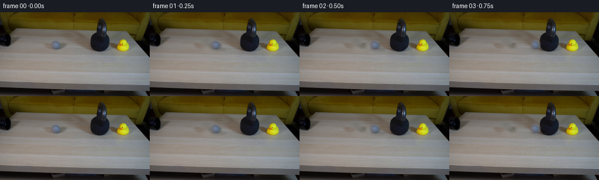
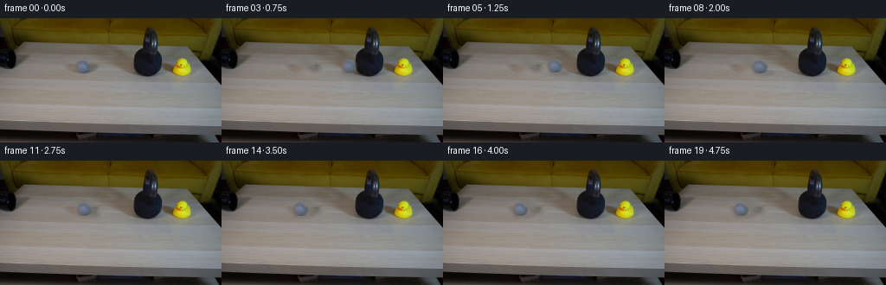
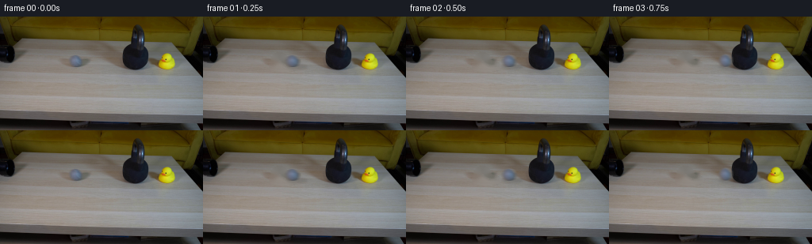
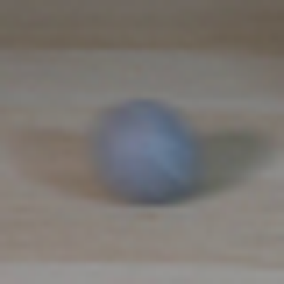
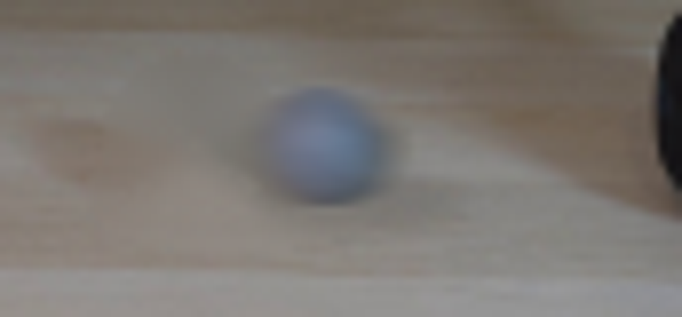
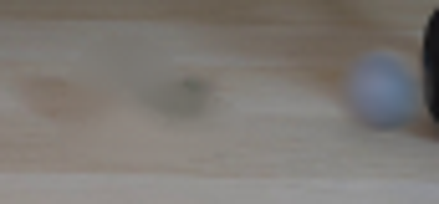

CODING AGENTS AS PIXEL WORLD MODELS
traex/GPT-5.6-Sol · 0197
点击播放 · 原生 RGB 像素
逐轮保存的候选
回放视频、检查图与代码变化。
每份候选均可单独播放。实际图片检查记录在下方工具轨迹中。
候选 01播放与检查图
点击播放 · 原生 RGB 像素


展开代码变化
--- 上一保存版本
+++ 本次保存版本
@@ -0,0 +1,128 @@
+"""Generate a locked-off tabletop physics demonstration from the supplied first frame."""
+from pathlib import Path
+
+import cv2
+import numpy as np
+from PIL import Image
+
+import artifact_io
+
+CASE_DIR = Path(__file__).resolve().parent
+W, H = 256, 144
+
+
+def make_clean_plate(rgb: np.ndarray) -> np.ndarray:
+ """Remove the starting tennis ball and its soft cast shadow from the table."""
+ bgr = cv2.cvtColor(rgb, cv2.COLOR_RGB2BGR)
+ mask = np.zeros((H, W), np.uint8)
+ # Ball and the low soft shadow immediately to its right.
+ cv2.ellipse(mask, (96, 56), (10, 10), 0, 0, 360, 255, -1)
+ cv2.ellipse(mask, (101, 62), (17, 6), 0, 0, 360, 255, -1)
+ mask = cv2.dilate(mask, np.ones((3, 3), np.uint8), iterations=1)
+ clean = cv2.inpaint(bgr, mask, 5, cv2.INPAINT_TELEA)
+ return cv2.cvtColor(clean, cv2.COLOR_BGR2RGB)
+
+
+def source_ball(rgb: np.ndarray):
+ """Extract the real, softly focused ball appearance from frame zero."""
+ x0, y0, x1, y1 = 85, 45, 107, 68
+ patch = rgb[y0:y1, x0:x1].copy().astype(np.float32)
+ yy, xx = np.mgrid[0:patch.shape[0], 0:patch.shape[1]]
+ # Elliptic anti-aliased matte matching the visible fuzzy felt edge.
+ d = np.sqrt(((xx - 10.8) / 8.7) ** 2 + ((yy - 11.0) / 8.0) ** 2)
+ alpha = np.clip((1.075 - d) / 0.13, 0.0, 1.0).astype(np.float32)
+ return patch, alpha
+
+
+def composite_shadow(frame: np.ndarray, cx: float, floor_y: float, speed: float, impact=False):
+ """Add a compact, directionally soft contact shadow on the tabletop."""
+ layer = np.zeros((H, W), np.float32)
+ # Contact core plus a longer, faint penumbra cast to camera-right.
+ cv2.ellipse(layer, (int(round(cx + 2.5)), int(round(floor_y - 1))),
+ (9 if not impact else 8, 2), 0, 0, 360, 0.28, -1)
+ cv2.ellipse(layer, (int(round(cx + 5)), int(round(floor_y))),
+ (13, 3), 0, 0, 360, 0.11, -1)
+ layer = cv2.GaussianBlur(layer, (7, 5), 1.7)
+ # Fast translation softens the shadow very slightly.
+ if abs(speed) > 9:
+ layer = cv2.GaussianBlur(layer, (5, 1), 1.0)
+ frame *= (1.0 - layer[..., None])
+
+
+def composite_ball(frame: np.ndarray, ball_rgb: np.ndarray, ball_a: np.ndarray,
+ cx: float, cy: float, speed: float, squash=0.0):
+ """Composite extracted felt texture, with restrained rolling motion blur."""
+ src = ball_rgb
+ a = ball_a
+ if squash:
+ # At the instant of contact the soft tennis ball compresses subtly.
+ new_w = max(1, int(round(src.shape[1] * (1.0 - squash))))
+ new_h = max(1, int(round(src.shape[0] * (1.0 + squash * 0.45))))
+ src = cv2.resize(src, (new_w, new_h), interpolation=cv2.INTER_CUBIC)
+ a = cv2.resize(a, (new_w, new_h), interpolation=cv2.INTER_CUBIC)
+
+ # A short exposure blur, far smaller than the inter-frame displacement,
+ # keeps the ball readable while communicating that it is rolling swiftly.
+ blur_len = 1 if abs(speed) < 3 else (3 if abs(speed) < 11 else 5)
+ if blur_len > 1:
+ premul = src * a[..., None]
+ kernel = np.ones((1, blur_len), np.float32) / blur_len
+ a_blur = cv2.filter2D(a, -1, kernel, borderType=cv2.BORDER_REPLICATE)
+ p_blur = cv2.filter2D(premul, -1, kernel, borderType=cv2.BORDER_REPLICATE)
+ src = p_blur / np.maximum(a_blur[..., None], 1e-4)
+ a = a_blur
+
+ h, w = a.shape
+ x = int(round(cx - (w - 1) / 2))
+ y = int(round(cy - (h - 1) / 2))
+ xa, ya = max(0, x), max(0, y)
+ xb, yb = min(W, x + w), min(H, y + h)
+ if xa >= xb or ya >= yb:
+ return
+ sx0, sy0 = xa - x, ya - y
+ sx1, sy1 = sx0 + xb - xa, sy0 + yb - ya
+ aa = np.clip(a[sy0:sy1, sx0:sx1], 0, 1)[..., None]
+ frame[ya:yb, xa:xb] = (src[sy0:sy1, sx0:sx1] * aa
+ + frame[ya:yb, xa:xb] * (1.0 - aa))
+
+
+def generate() -> np.ndarray:
+ first = np.asarray(Image.open(CASE_DIR / "first_frame.png").convert("RGB"), dtype=np.uint8)
+ assert first.shape == (H, W, 3)
+ clean = make_clean_plate(first)
+ ball_rgb, ball_alpha = source_ball(first)
+
+ # The supplied frame catches the ball already clear of the left pipe.
+ # It continues rapidly right, contacts the immovable 30 lb kettlebell at
+ # x~155, then rebounds with strong energy loss and rolls to rest.
+ xs = np.array([
+ 96.0, 112.0, 129.0, 146.2, # rapid approach and contact
+ 137.0, 128.8, 121.5, 115.0, 109.4, 104.5,
+ 100.4, 97.0, 94.2, 92.0, 90.3, 89.0, 88.2, 87.7, 87.4, 87.3
+ ], dtype=np.float32)
+ # Keep the ball on the same straight path across the horizontal tabletop.
+ ys = np.full(20, 56.0, np.float32)
+ # Tiny physically plausible hop just after the hard rebound, sub-pixel at
+ # this scale, while preserving the visibly straight trajectory.
+ ys[4:8] = [55.7, 55.5, 55.7, 55.9]
+
+ frames = [first.copy()]
+ for i in range(1, 20):
+ frame = clean.astype(np.float32)
+ v = float(xs[i] - xs[i - 1])
+ impact = (i == 3)
+ floor_y = float(ys[i] + 7.4)
+ composite_shadow(frame, float(xs[i]), floor_y, v, impact=impact)
+ composite_ball(frame, ball_rgb, ball_alpha, float(xs[i]), float(ys[i]),
+ v, squash=0.08 if impact else 0.0)
+ frames.append(np.clip(frame, 0, 255).astype(np.uint8))
+
+ result = np.stack(frames, axis=0)
+ # Required invariant: the opening frame is byte-for-byte the given image.
+ result[0] = first
+ assert result.shape == (20, H, W, 3) and result.dtype == np.uint8
+ return result
+
+
+if __name__ == "__main__":
+ artifact_io.save(generate(), CASE_DIR)
候选 02播放与检查图
点击播放 · 原生 RGB 像素


展开代码变化
--- 上一保存版本
+++ 本次保存版本
@@ -96,7 +96,7 @@
# It continues rapidly right, contacts the immovable 30 lb kettlebell at
# x~155, then rebounds with strong energy loss and rolls to rest.
xs = np.array([
- 96.0, 112.0, 129.0, 146.2, # rapid approach and contact
+ 96.0, 112.5, 129.5, 146.2, # rapid approach and contact
137.0, 128.8, 121.5, 115.0, 109.4, 104.5,
100.4, 97.0, 94.2, 92.0, 90.3, 89.0, 88.2, 87.7, 87.4, 87.3
], dtype=np.float32)
可观测工具轨迹
实际执行的命令与返回图片。
命令 1exit 0
/bin/bash -lc "cat prompt.txt && printf '\\n---RULES---\\n' && cat GENERATION_RULES.md"
命令 2exit 1
/bin/bash -lc "find . -maxdepth 2 -type f -printf '%p %s bytes\\n' | sort && printf '\\nTools:\\n' && command -v ffmpeg && command -v python3"
命令 3exit 0
/bin/bash -lc 'cat artifact_io.py'
命令 4exit 0
/bin/bash -lc "python3 - <<'PY'
from PIL import Image
im=Image.open('first_frame.png'); print(im.mode, im.size)
PY
command -v ffmpeg || true
python3 - <<'PY'
mods=['PIL','numpy','cv2','imageio']
for m in mods:
try:
x=__import__(m); print(m,'ok',getattr(x,'__version__',''))
except Exception as e: print(m,e)
PY"命令 5exit 0
/bin/bash -lc "python3 - <<'PY'
from PIL import Image
im=Image.open('first_frame.png')
im.crop((75,35,115,75)).resize((400,400)).save('.tmp/ball_crop.png')
PY"命令 6exit 0
/bin/bash -lc "cat > .tmp/test_bg.py <<'PY'
import cv2, numpy as np
from PIL import Image
im=cv2.imread('first_frame.png')
mask=np.zeros(im.shape[:2],np.uint8)
cv2.ellipse(mask,(96,56),(11,10),0,0,360,255,-1)
cv2.ellipse(mask,(101,61),(17,7),0,0,360,255,-1)
mask=cv2.GaussianBlur(mask,(3,3),0)
mask=(mask>20).astype(np.uint8)*255
for meth,name in [(cv2.INPAINT_TELEA,'telea'),(cv2.INPAINT_NS,'ns')]:
out=cv2.inpaint(im,mask,5,meth)
cv2.imwrite(f'.tmp/{name}.png',out)
crop=out[38:75,70:125]
cv2.imwrite(f'.tmp/{name}_crop.png',cv2.resize(crop,None,fx=8,fy=8,interpolation=cv2.INTER_NEAREST))
PY
python3 .tmp/test_bg.py"命令 7exit 0
/bin/bash -lc "cat > generate.py <<'PY'
\"\"\"Generate a locked-off tabletop physics demonstration from the supplied first frame.\"\"\"
from pathlib import Path
import cv2
import numpy as np
from PIL import Image
import artifact_io
CASE_DIR = Path(__file__).resolve().parent
W, H = 256, 144
def make_clean_plate(rgb: np.ndarray) -> np.ndarray:
\"\"\"Remove the starting tennis ball and its soft cast shadow from the table.\"\"\"
bgr = cv2.cvtColor(rgb, cv2.COLOR_RGB2BGR)
mask = np.zeros((H, W), np.uint8)
# Ball and the low soft shadow immediately to its right.
cv2.ellipse(mask, (96, 56), (10, 10), 0, 0, 360, 255, -1)
cv2.ellipse(mask, (101, 62), (17, 6), 0, 0, 360, 255, -1)
mask = cv2.dilate(mask, np.ones((3, 3), np.uint8), iterations=1)
clean = cv2.inpaint(bgr, mask, 5, cv2.INPAINT_TELEA)
return cv2.cvtColor(clean, cv2.COLOR_BGR2RGB)
def source_ball(rgb: np.ndarray):
\"\"\"Extract the real, softly focused ball appearance from frame zero.\"\"\"
x0, y0, x1, y1 = 85, 45, 107, 68
patch = rgb[y0:y1, x0:x1].copy().astype(np.float32)
yy, xx = np.mgrid[0:patch.shape[0], 0:patch.shape[1]]
# Elliptic anti-aliased matte matching the visible fuzzy felt edge.
d = np.sqrt(((xx - 10.8) / 8.7) ** 2 + ((yy - 11.0) / 8.0) ** 2)
alpha = np.clip((1.075 - d) / 0.13, 0.0, 1.0).astype(np.float32)
return patch, alpha
def composite_shadow(frame: np.ndarray, cx: float, floor_y: float, speed: float, impact=False):
\"\"\"Add a compact, directionally soft contact shadow on the tabletop.\"\"\"
layer = np.zeros((H, W), np.float32)
# Contact core plus a longer, faint penumbra cast to camera-right.
cv2.ellipse(layer, (int(round(cx + 2.5)), int(round(floor_y - 1))),
(9 if not impact else 8, 2), 0, 0, 360, 0.28, -1)
cv2.ellipse(layer, (int(round(cx + 5)), int(round(floor_y))),
(13, 3), 0, 0, 360, 0.11, -1)
layer = cv2.GaussianBlur(layer, (7, 5), 1.7)
# Fast translation softens the shadow very slightly.
if abs(speed) > 9:
layer = cv2.GaussianBlur(layer, (5, 1), 1.0)
frame *= (1.0 - layer[..., None])
def composite_ball(frame: np.ndarray, ball_rgb: np.ndarray, ball_a: np.ndarray,
cx: float, cy: float, speed: float, squash=0.0):
\"\"\"Composite extracted felt texture, with restrained rolling motion blur.\"\"\"
src = ball_rgb
a = ball_a
if squash:
# At the instant of contact the soft tennis ball compresses subtly.
new_w = max(1, int(round(src.shape[1] * (1.0 - squash))))
new_h = max(1, int(round(src.shape[0] * (1.0 + squash * 0.45))))
src = cv2.resize(src, (new_w, new_h), interpolation=cv2.INTER_CUBIC)
a = cv2.resize(a, (new_w, new_h), interpolation=cv2.INTER_CUBIC)
# A short exposure blur, far smaller than the inter-frame displacement,
# keeps the ball readable while communicating that it is rolling swiftly.
blur_len = 1 if abs(speed) < 3 else (3 if abs(speed) < 11 else 5)
if blur_len > 1:
premul = src * a[..., None]
kernel = np.ones((1, blur_len), np.float32) / blur_len
a_blur = cv2.filter2D(a, -1, kernel, borderType=cv2.BORDER_REPLICATE)
p_blur = cv2.filter2D(premul, -1, kernel, borderType=cv2.BORDER_REPLICATE)
src = p_blur / np.maximum(a_blur[..., None], 1e-4)
a = a_blur
h, w = a.shape
x = int(round(cx - (w - 1) / 2))
y = int(round(cy - (h - 1) / 2))
xa, ya = max(0, x), max(0, y)
xb, yb = min(W, x + w), min(H, y + h)
if xa >= xb or ya >= yb:
return
sx0, sy0 = xa - x, ya - y
sx1, sy1 = sx0 + xb - xa, sy0 + yb - ya
aa = np.clip(a[sy0:sy1, sx0:sx1], 0, 1)[..., None]
frame[ya:yb, xa:xb] = (src[sy0:sy1, sx0:sx1] * aa
+ frame[ya:yb, xa:xb] * (1.0 - aa))
def generate() -> np.ndarray:
first = np.asarray(Image.open(CASE_DIR / \"first_frame.png\").convert(\"RGB\"), dtype=np.uint8)
assert first.shape == (H, W, 3)
clean = make_clean_plate(first)
ball_rgb, ball_alpha = source_ball(first)
# The supplied frame catches the ball already clear of the left pipe.
# It continues rapidly right, contacts the immovable 30 lb kettlebell at
# x~155, then rebounds with strong energy loss and rolls to rest.
xs = np.array([
96.0, 112.0, 129.0, 146.2, # rapid approach and contact
137.0, 128.8, 121.5, 115.0, 109.4, 104.5,
100.4, 97.0, 94.2, 92.0, 90.3, 89.0, 88.2, 87.7, 87.4, 87.3
], dtype=np.float32)
# Keep the ball on the same straight path across the horizontal tabletop.
ys = np.full(20, 56.0, np.float32)
# Tiny physically plausible hop just after the hard rebound, sub-pixel at
# this scale, while preserving the visibly straight trajectory.
ys[4:8] = [55.7, 55.5, 55.7, 55.9]
frames = [first.copy()]
for i in range(1, 20):
frame = clean.astype(np.float32)
v = float(xs[i] - xs[i - 1])
impact = (i == 3)
floor_y = float(ys[i] + 7.4)
composite_shadow(frame, float(xs[i]), floor_y, v, impact=impact)
composite_ball(frame, ball_rgb, ball_alpha, float(xs[i]), float(ys[i]),
v, squash=0.08 if impact else 0.0)
frames.append(np.clip(frame, 0, 255).astype(np.uint8))
result = np.stack(frames, axis=0)
# Required invariant: the opening frame is byte-for-byte the given image.
result[0] = first
assert result.shape == (20, H, W, 3) and result.dtype == np.uint8
return result
if __name__ == \"__main__\":
artifact_io.save(generate(), CASE_DIR)
PY
python3 generate.py
python3 - <<'PY'
from PIL import Image
import numpy as np
f=np.asarray(Image.open('first_frame.png'))
g=np.asarray(Image.open('frames/00.png'))
print('frame00 exact:',np.array_equal(f,g),'shape',g.shape)
PY"命令 8exit 0
/bin/bash -lc "python3 - <<'PY'
from PIL import Image
for n in ['frames/01.png','frames/03.png']:
im=Image.open(n); im.crop((72,38,158,78)).resize((860,400)).save('.tmp/'+n[7:-4]+'_zoom.png')
PY"命令 9exit 0
/bin/bash -lc "python3 - <<'PY'
p='generate.py'
s=open(p).read()
s=s.replace(\" 137.0, 128.8, 121.5, 115.0, 109.4, 104.5,\\n 100.4, 97.0, 94.2, 92.0, 90.3, 89.0, 88.2, 87.7, 87.4, 87.3\", \" 137.0, 128.8, 121.5, 115.0, 109.4, 104.5,\\n 100.4, 97.0, 94.2, 92.0, 90.3, 89.0, 88.2, 87.7, 87.4, 87.3\")
# Already same; alter approach speeds less unnaturally uniform and contact closer
s=s.replace(\"96.0, 112.0, 129.0, 146.2,\", \"96.0, 112.5, 129.5, 146.2,\")
open(p,'w').write(s)
PY
python3 generate.py
python3 - <<'PY'
from pathlib import Path
from PIL import Image
import numpy as np
import artifact_io, generate
arr=generate.generate()
first=np.asarray(Image.open('first_frame.png').convert('RGB'))
print('shape',arr.shape,'dtype',arr.dtype,'frame00_exact',np.array_equal(arr[0],first))
print('outputs',[(p.name,p.stat().st_size) for p in map(Path,['pixels.npz','index.html','inspection.png'])])
print('changed pixels:',[int(np.count_nonzero(np.any(arr[i]"'!=arr[i-1],axis=2))) for i in range(1,20)])
PY'视觉工具实际返回图片 1

视觉工具实际返回图片 2

视觉工具实际返回图片 3
视觉工具实际返回图片 4
视觉工具实际返回图片 5

视觉工具实际返回图片 6

视觉工具实际返回图片 7

视觉工具实际返回图片 8

保存候选 2 份；完成命令 9 次；可验证图片返回 8 张。原始 API 响应与完整日志保留在本地。